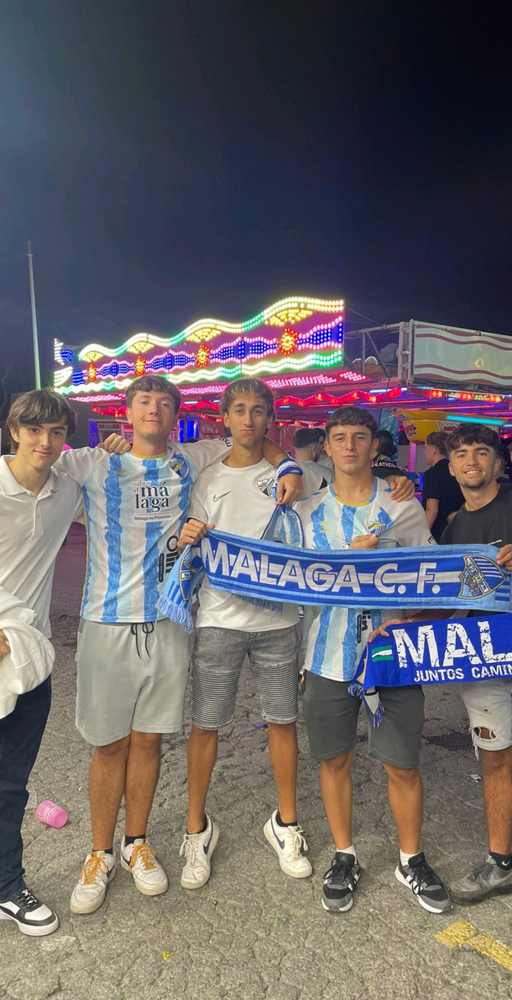
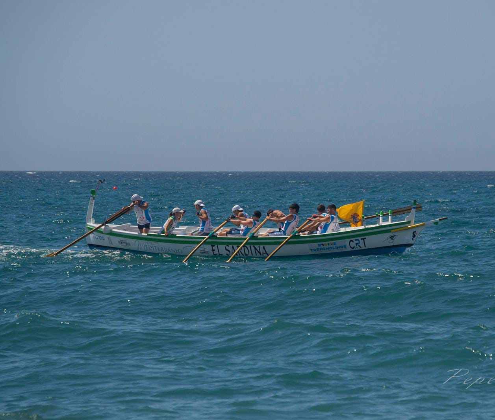

Santino Vigna Tiburzi
Hi, I'm Santino! I'm an 18-year-old Argentine-Italian currently residing in Málaga, Spain. From a young age,
I've been deeply passionate about sports, particularly football and Formula 1, which have taught me the values
of perseverance, teamwork, and dedication. Over time, my curiosity has expanded beyond the field, leading me to
explore the fascinating world of technology. Today, I'm fully immersed in the tech landscape, driven by a keen
interest in how innovation and digital transformation are reshaping industries and improving lives globally.
I'm always eager to learn, grow, and contribute to projects that harness the power of technology to create meaningful impact.


I'm passionate about team rowing, a sport that challenges both physical strength and mental focus. As a member of the Club de Remo Torremolinos, I work to master this discipline alongside a dedicated team. Rowing has taught me the importance of teamwork, communication, and perseverance, as every stroke requires perfect coordination and trust.
This sport not only keeps me active but also strengthens my ability to collaborate, stay disciplined, and push my limits.